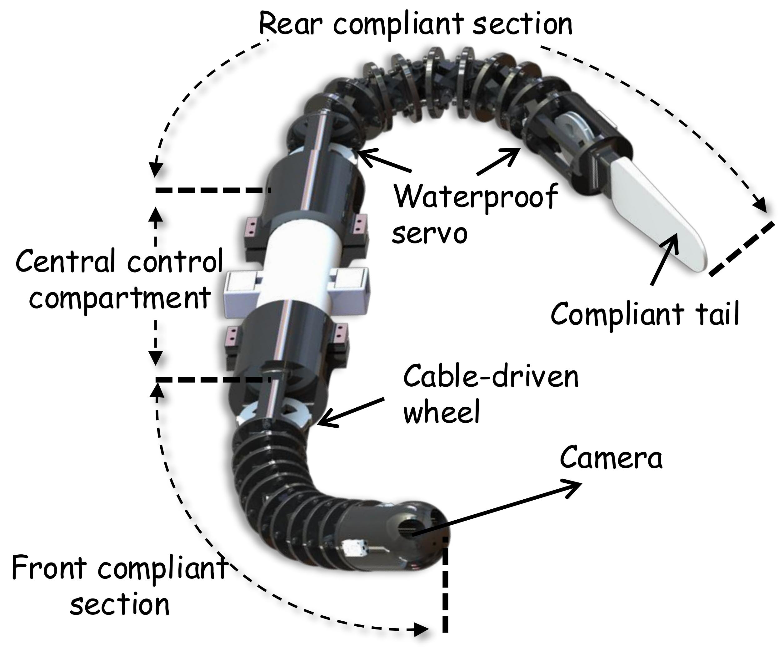

About Me
I am an undergraduate student in the College of Engineering at Ocean University of China. My research interests lie in Embodied AI, Robot Learning, Reinforcement Learning, and Biomimetic Robotics, with a focus on intelligent robotic systems that can operate robustly in complex real-world environments, especially underwater domains.
I expect to graduate in June 2027 and am actively seeking PhD opportunities for Fall 2027.
Research Interests
- Embodied AI: learning-based control and decision making for physical agents
- Robot Learning: reinforcement learning, imitation learning, and sim-to-real transfer
- Biomimetic Robotics: eel-like and fish-inspired robotic systems for underwater tasks
- Robotic Perception: visual recognition, multimodal sensing, and environment reconstruction
News
- [Nov. 2025] Our paper on a biomimetic robotic eel was published at ICCCR 2025, Zhejiang University.
- [Oct. 2025] Won National Second Prize in the Contemporary Undergraduate Mathematical Contest in Modeling.
- [Sep. 2025] Awarded the Shandong Provincial Government Scholarship.
- [Apr. 2025] Our eel-like robot obstacle avoidance paper was submitted and is currently under review.
- [Sep. 2024] Received the First-Class Comprehensive Scholarship for the second consecutive year.
Research Experience
A Two-Stage Learning Framework for Autonomous Obstacle Avoidance of an Eel-Like Robot
First Author, manuscript under review
- Developed a vision-based learning framework that combines imitation learning initialization with PPO fine-tuning for autonomous underwater obstacle avoidance.
- Built a MuJoCo simulation environment with simplified underwater dynamics and AHTA-CPG action abstraction for strongly coupled eel-like locomotion.
- Applied visual domain randomization and validated the policy in 60 real-world water-tank trials, achieving success rates from 70% to 90% across obstacle settings.
Variable-Length Biomimetic Robotic Fish with Multimodal Perception for Deep-Sea Exploration
Project Lead
- Led the design of a variable-length biomimetic robotic fish for adaptive operation in unstructured underwater environments.
- Designed modular antagonistic continuum units to enable morphology adaptation.
- Developed multimodal fusion and motion-performance evaluation with Kalman filtering and AHP, covering decision-system design, mechanical design, and motion simulation.
Additional Projects
- Cross-Domain Biomimetic Eel Robot Based on a Wire-Driven Mechanism: designed a cross-domain eel robot for submarine cable inspection and early warning, integrating wire-driven locomotion, buoyancy-gravity regulation, visual recognition, and Gaussian splatting reconstruction.
- Optical Modeling-Based Thickness Estimation of Semiconductor Epitaxial Layers: built an interference-based thickness inversion model for SiC/Si epitaxial layers using Savitzky-Golay filtering, Fourier analysis, and transfer matrix methods.
- High-Stability Duck-Type Wave Energy Converter Based on a Pendulum PTO System: optimized energy capture efficiency and control stability with AQWA simulation, genetic algorithms, and a pendulum-based PTO design.
- Modular Adaptive Deep-Sea Resource Collection and Locomotion Platform: contributed to a modular deep-sea mining vehicle with active four-track locomotion and plume-suppression structures for complex seabed terrain.
Publications
-

Under Review
A Two-Stage Learning Framework for Autonomous Obstacle Avoidance of an Eel-Like Robot
Ziyi Sun
Manuscript under review.
-
Ziyi Sun and collaborators
International Conference on Computer and Communication Robotics (ICCCR), Zhejiang University, 2025.
Patents and Software
- Invention Patent: High-Stability PTO System for Duck-Type Wave Energy Converters. First student inventor.
- Software Copyright: Underwater Polarized Light Field Prediction Software for Biomimetic Navigation V1.0. Registration No. 2024SR0140235.
Honors and Awards
2025
- Shandong Provincial Government Scholarship
- National Second Prize, Contemporary Undergraduate Mathematical Contest in Modeling (CUMCM)
- Honorable Mention, Mathematical Contest in Modeling (MCM)
- National First Prize, National 3D Digital Innovation Design Competition
- Outstanding Student, Ocean University of China
- Outstanding Student Cadre, Ocean University of China
2024
- First-Class Comprehensive Scholarship, Ocean University of China
- Outstanding Student, Ocean University of China
- Outstanding Student Cadre, Ocean University of China
- National Third Prize, 18th National College Student Energy Conservation Competition
- Science and Technology Innovation Pioneer Team, College of Engineering
Education
- B.Eng. in Mechanical Design, Manufacturing and Automation, Ocean University of China
Sep. 2023 - Jun. 2027 (expected)
GPA: 3.7 / 4.0 | Academic Ranking: 4 / 56 (Top 7%) | Expected graduate recommendation ranking: 1 / 52
Technical Skills
| Category |
Skills |
| Programming | Python, C |
| Robot Learning | Reinforcement Learning, Imitation Learning, Sim-to-Real Transfer |
| Simulation and Modeling | MuJoCo, MATLAB, AQWA, Fluent |
| Computer Vision | Visual Recognition, Gaussian Splatting, Visual Domain Randomization |
| Robotics and Control | Motion Simulation, Embedded Control, Mechatronic Debugging |
| Mechanical Design | SolidWorks, 3D modeling, structural design |
| Languages | Mandarin Chinese (native), English, German (elementary), Italian (elementary) |
Leadership and Service
Roles
- Class Representative, Ocean University of China
- Team Leader, Engineering College Debate Team
- Director of Event Organization Department, Student Association for the Study of Socialism with Chinese Characteristics
Service and Outreach
- Volunteer, 2023 Qingdao Marathon
- Member, 2024 National College Student Volunteer Outreach Team for Promoting the Spirit of the Zunyi Conference
- Outstanding Individual in Summer Social Practice, Ocean University of China
- Active participant in Youth League activities
Powered by Jekyll and Minimal Light theme.